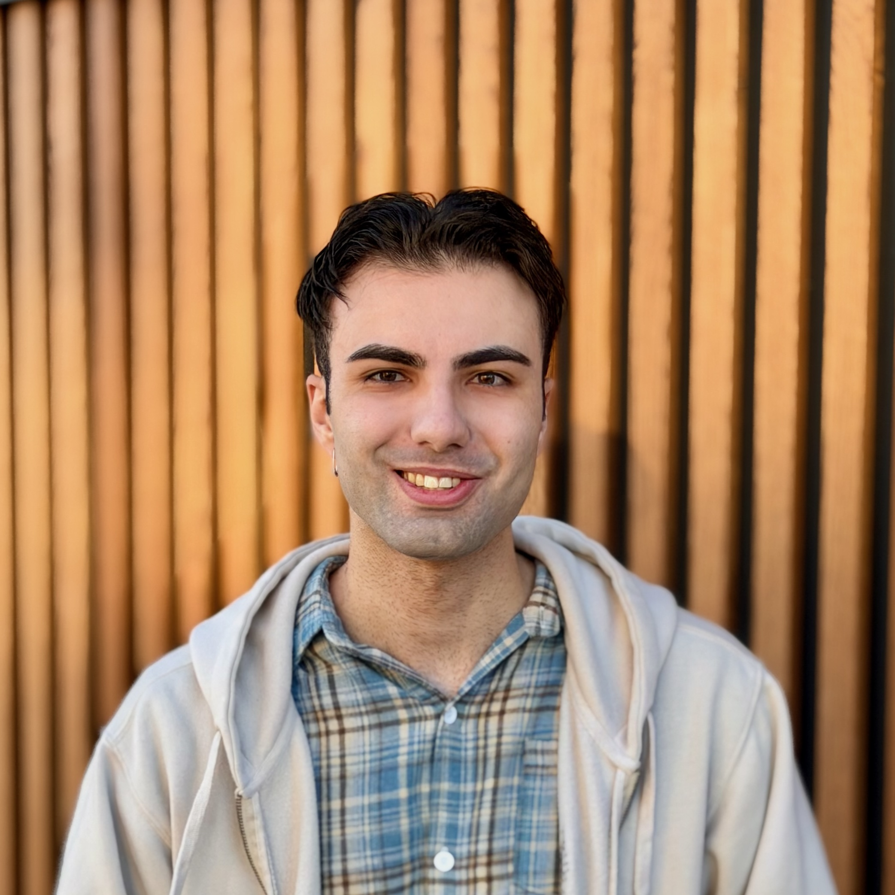

Co-Founder & Chief of Agents · Agents2Agents

Co-Founder of Agents2Agents — building foundation models trained on physics, not just pixels, and a closed loop of AI agents that build, deploy, and improve them automatically. Our first product, ata, is an open-source AI agent for researchers and engineers. Previously ML Research Engineer at Apple, shipping ML systems from CUDA kernels to production.
Co-Founder & Chief of Agents
ML Research Engineer — 3D DL Algorithms & Infrastructure
Co-Founder & CEO
Research Assistant — NLP
Software Engineer
Data Infrastructure Engineer
+ confidential research at Apple
University of Waterloo · 2022 · GPA 3.9
I was hesitant to write a recommendation for a relative, but after a series of outstanding achievements by Nima, I thought to myself that it was just wrong not to recognize him. In a nutshell, Nima is the ultimate "get it done" person. A few times he has told me that he was to embark on something really big and I have seen him how he gets it done against many odds. I believe this is rooted in a collection of characteristics: very knowledgeable and always eager to learn; a great and attentive listener and the ultimate doer.
Disclosure: Reza is my uncle (and mentor)
I worked with Nima closely during his co-op at Blockthrough. He's a talented programmer and also a very quick learner who can get the grasp of any technology needed to get the tasks done. He was always open to suggestions and also he actively came up with different solutions for various challenges. Overall, I enjoyed working with him and I think whatever team he joins, he can bring a lot of value.
Nima was our intern at Levyx. In a short span of his internship, Nima was able to ramp up on our Python dictionary wrapper, understand our key-value integration, and run performance reports. Nima is sharp and tries to understand the business side of things too. Nima will make a great hire!
It's a pleasure to work with Nima. He has great initiatives and abilities to tackle complex problems by both following instructions/suggestions and independent thinking. He is also humble, hard-working and a quick learner.
Nima has an extraordinary ability to grasp theory and apply it in practice, to complex software systems. He has been a pleasure to work with since he is amicable and strives to ensure flow of communication and understanding among team members. I am confident that Nima will quickly bring value to any project he contributes to.
From the time Nima co-oped at Blockthrough, he was quickly able to show the ability to problem solve both in groups and independently. He always asks questions if something is confusing him and he has shown diligence on the projects he has worked on from start to finish.
Nima is smart and very talented. He is a quick learner, and brings new ideas to the table. He is passionate about his work and isn't afraid of tackling new challenges. It was a pleasure working with Nima at Levyx!